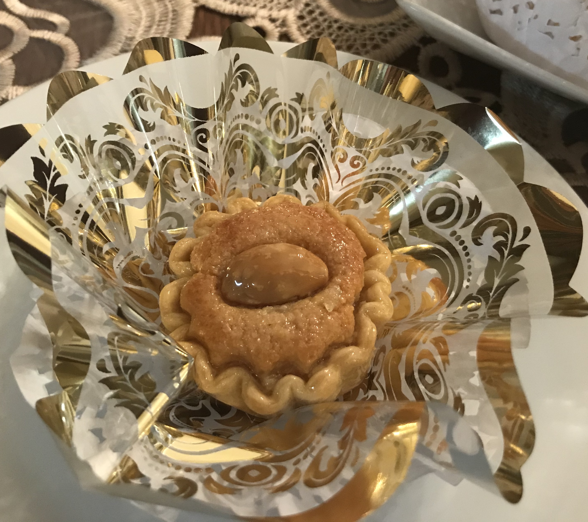

Dziriat (Algerian Almond Tarts)

Description
This recipe with all its variants is prepared only on special celebrations and weddings. It is a challenge to
prepare, but is well worth the time and effort. There exist several varieties of this recipe. Some use molds
while others are molded by hand, and some are dipped in syrup and others are not. The dough recipe may include
butter instead of vegetable oil and sometimes egg is omitted. The goal is a non flaky, thin, and firm crust.
ingredients
- Sugar Syrup
- 1 cup white sugar
- 1 cup water
- 1 teaspoon fresh lemon juice
- 2 tablespoons orange flower water
- Dough
- 2 cups all-purpose flour
- 2 tablespoons vegetable oil
- 1 egg
- ½ teaspoon fresh lemon juice
- 1 pinch salt
- 1 tablespoon orange flower water
- Filling
- 4 cups raw almonds
- 1 cup sugar
- 3 eggs
- ½ teaspoon baking powder
- 1 teaspoon vanilla powder
- 1 lemon, zested
- 2 tablespoons orange flower water
- cornstarch, for rolling out the dough
- pine nuts, for decoration
Directions
- Step 1
Prepare the almonds the day before. Bring 6 cups of water to a boil. Remove from heat, and add the almonds.
Let the almonds soak in water for about 5 minutes, then drain and peel. Spread the almonds on baking sheets,
and bake at 200 degrees F(95 degrees C) until completely dry and toasted. This takes several hours, and
needs to be prepared ahead. Be careful not to burn the nuts, as this will give a bitter taste to the
filling.
- Step 2
Combine 1 cup sugar and 1 cup water in a saucepan, and bring to a boil. Add 1 teaspoon lemon juice, reduce
heat to low, and let it simmer until syrupy, about 30 to 40 minutes. Stir in orange blossom water, and
remove from heat. Set sugar syrup aside.
- Step 3
Combine flour and salt in a large mixing bowl. Make a hole in the center, and pour oil, egg, 1/2 teaspoon
lemon juice, and 1 tablespoon orange blossom water into the center. Mix with fingers until the dough
resembles coarse crumbs. Gradually sprinkle with warm water while mixing until the dough becomes soft and
pliable. Divide into 4 equal portions. Cover dough with a wet cloth, and set aside.
- Step 4
In a food processor, finely grind the almonds. Measure 3 cups of the finely ground almonds into a mixing
bowl, and stir together with 1 cup sugar, baking powder, vanilla powder, lemon zest, and 2 tablespoons
orange flower water. Mix in three eggs one at a time, stirring constantly; mix until you get a sticky,
paste-like mixture.
- Step 5
Sprinkle cornstarch on the rolling surface to prevent sticking. Roll each portion of dough very thinly, 1 to
2 millimeters (1/16 inch). Cut the rolled dough into circles of about 10 centimeters (4 inches) in diameter
each. Lightly wipe the surface of each circle with cornstarch, and fit into a tart mold, cornstarch side
down to prevent sticking. Gently press the dough onto the sides and bottom of the mold, and trim extra dough
from around the rim. Fill three quarters of each mold with the almond filling.
- Step 6
Bake on the top shelf at 350 degrees F (175 degrees C) for 20 to 25 minutes, or until the surface of the
tart is golden and the dough is firm. Remove the tarts from the molds as soon as they come out of the oven.
Dip each tart in the sugar syrup while still hot. Stick a pine nut into the middle of each tart for
decoration. Place on a wire rack to drain.